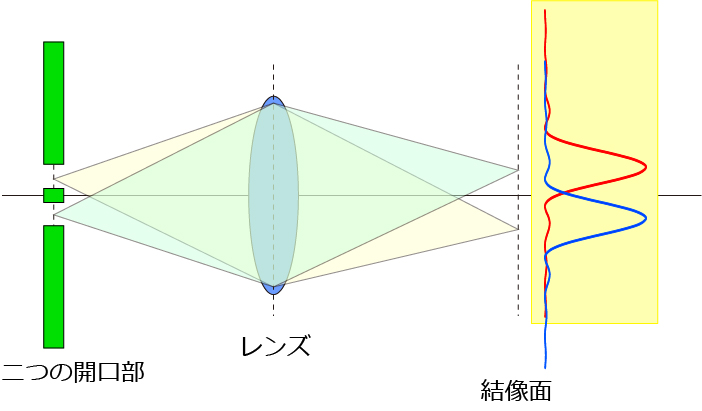
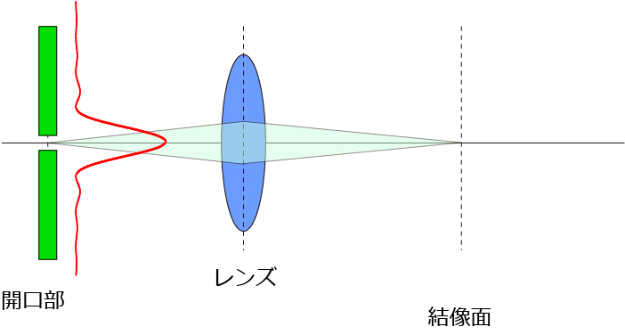
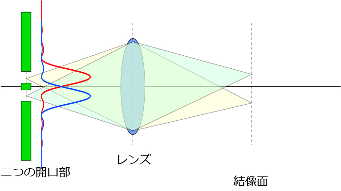

像分布関数 (PSF , Point spread function) について-08
前ページに書いたように，
二つの開口部から発せられた波をレンズを通して結像させた場合
一つの開口部から発せられた波
というのは同じ（ような）強度分布になる，と記しましたが，よく教科書には，
二つの開口部から発せられた輝点はレンズを通して結像した場合，エアリーディスクを生じ，重なり合う
と書かれていますね．つまり，

でも．．．．前の議論，計算から言うと，それぞれの開口部から発せられた波はすでに回折現象を起こしているので，
一つの開口部の場合，

開口部からは中心が強い強度分布となり，広がらないのでは？？？？
さらに，二つの開口部の場合．．．

それぞれの開口部からの光が合成して，結局中心が強い強度分布となり，広がらないのでは？？？？
という疑問がわいてきました．．．
二つの議論で，違うと思われるのは，
レンズ ： レンズの大きさ ＞＞ 波長
一つの開口 ： 開口部の大きさ ～ 波長
ですね．
となると，生体試料の構造から来る回折による結像，はどちらで説明すればよいのだろう？？？？
最初は，レンズから生体試料の構造の結像を考えてみようと思ったのですが．．．
たとえば，GFPのような波長以下の構造から発せられる光はレンズの考え方で説明できそうなのですが．．．．
単一のGFPから発せられる光はレンズを通すと，エアリーディスクを発生する
という風に（これは天体観察における星の結像といっしょですね）．
また，近接する二つのGFPからの光は，それぞれ位相が違う（インコヒーレント，これは中央大，上村先生からその概念をご教授していただきました）のでそれぞれ回折現象を起こさないので，単にレンズの説明を独立に計算し，結像面で合成すればよいと思います．
問題は，明視野などの生体試料の構造を反映した場合です．．．
すいません．．．まだ私が理解できていないだけかもしれませんが．．．
どなたか教えていただける方は，私まで連絡ください．